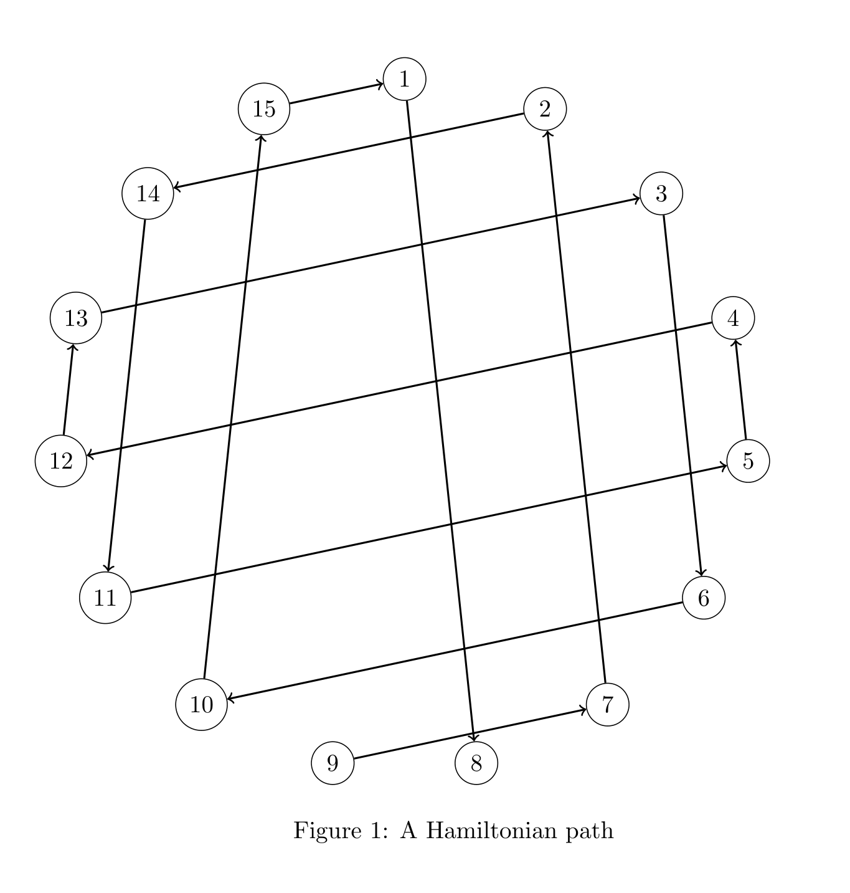

[back]
"Arrange the numbers 1 to 15 on a line, each exactly once, such that every pair of adjacent numbers adds to a perfect square (1, 4, 9, 16...)."
First, for each number, we make a list of which numbers can be adjacent to it.
1 -> 3, 8, 15
2 -> 7, 14
3 -> 1, 6, 13
4 -> 5, 12
5 -> 4, 11
6 -> 3, 10
7 -> 2, 9
8 -> 1
9 -> 7
10 -> 6, 15
11 -> 5, 14
12 -> 4, 13
13 -> 3, 12
14 -> 2, 11
15 -> 1, 10
Notice that 8 and 9 can only have a single number adjacent to them. Therefore, one has to be the leftmost and the other has to be the rightmost number of the arrangement, since if they're not, they must have 2 numbers adjacent to them, which they can't.
Without loss of generality, let's assume we start with 9 on the left. The next number has to be 7, and the next number to 7 has to be 2 since 9 is taken, and so on, until we hit 3, where we have 2 options (1 and 6)
9 7 2 14 11 5 4 12 13 3 ?? ...
(1 or 6)
Have we hit a dead end? Well, no! We can start constructing from the right since we know 8 is going to be at the other end.
... 8
... 1 8
... 15 1 8
... 10 15 1 8
... 6 10 15 1 8
... 3 6 10 15 1 8
And Voilà! We have reached 3 from both the right and left, so now we can piece together the puzzle:
9 7 2 14 11 5 4 12 13 3 ...
... 3 6 10 15 1 8
-----------------------------------
9 7 2 14 11 5 4 12 13 3 6 10 15 1 8
And there's our final answer! Pretty fun, but not the end of the story.
The table we made can also be seen as an Adjacency List of an Undirected Graph with 15 nodes labeled from 1 to 15. We found a Hamiltonian Path on this graph.
